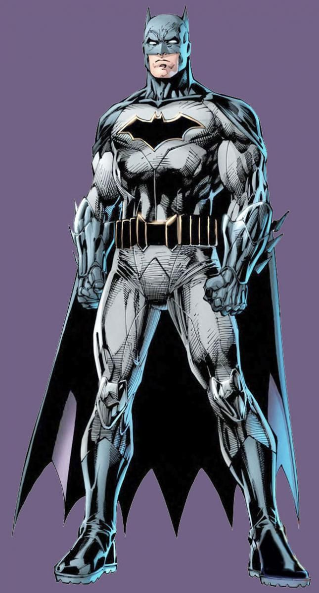
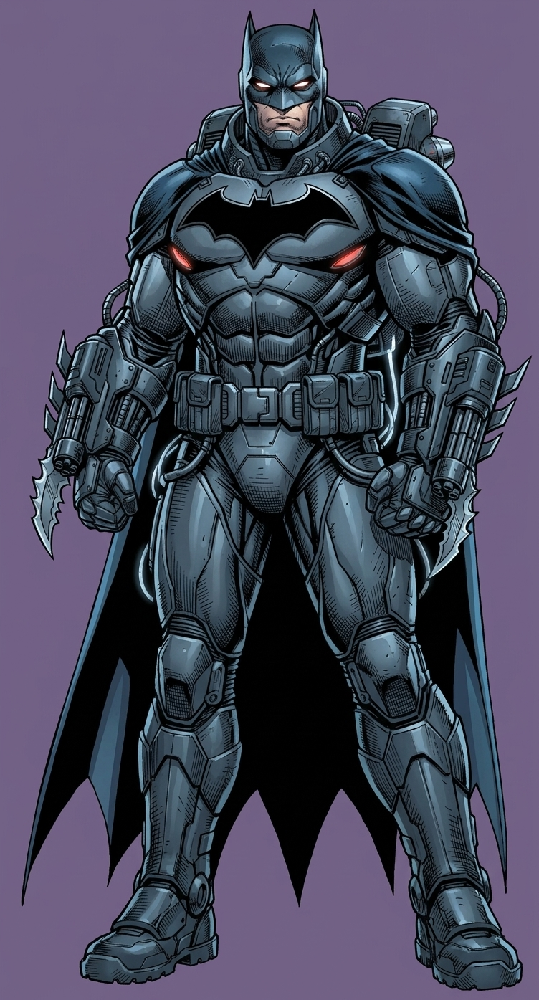
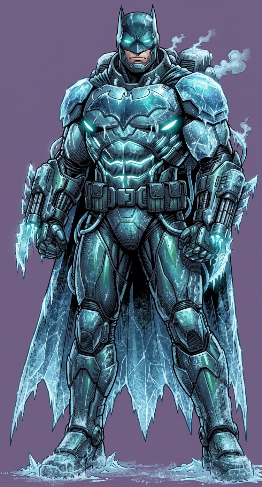
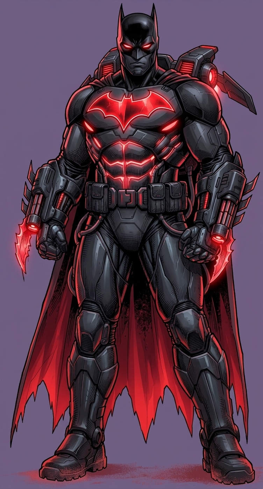
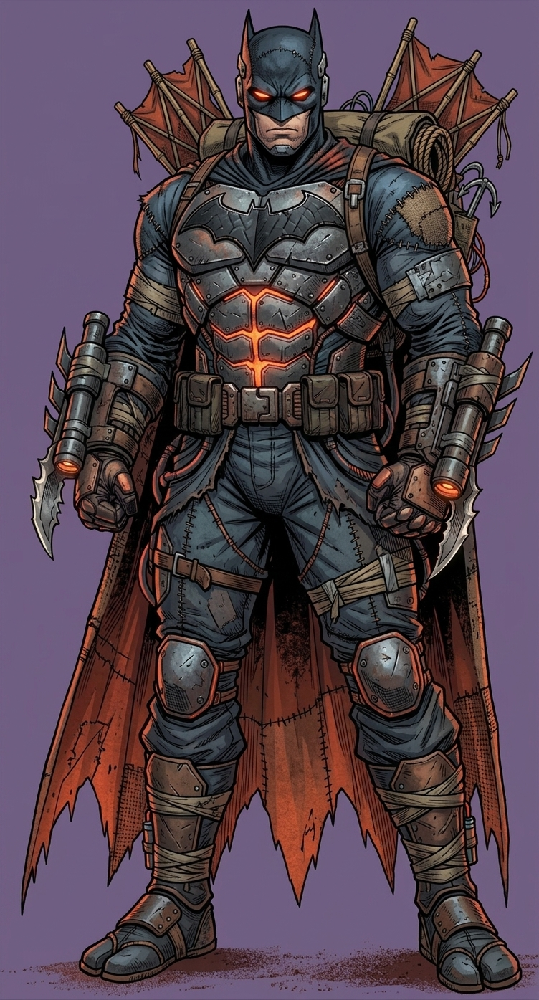
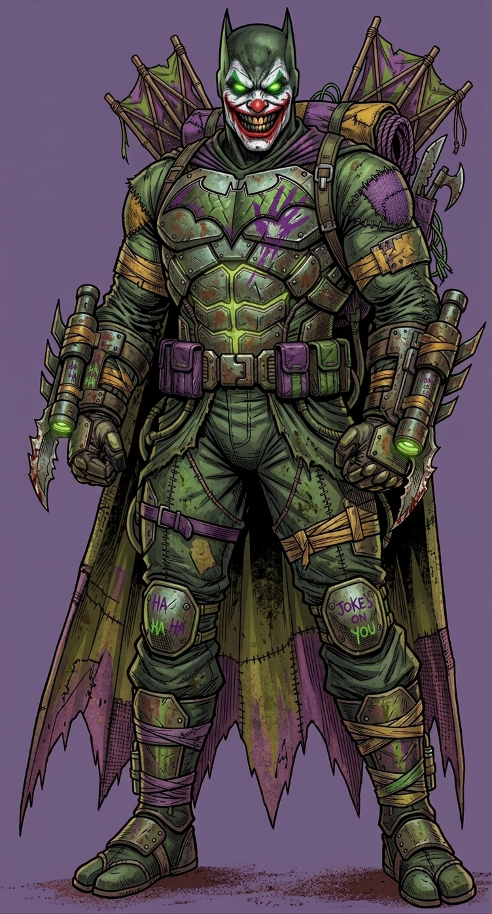

HISTORIA

Bruce Wayne quedó huérfano cuando era niño después de que sus padres fueran asesinados en Gotham City. Este acontecimiento marcó su vida y lo llevó a entrenarse física y mentalmente para combatir el crimen.
Después de años de entrenamiento, Bruce regresó a Gotham y adoptó la identidad de Batman. Desde entonces utiliza sus habilidades, inteligencia y tecnología para proteger la ciudad y enfrentarse a algunos de los criminales más peligrosos.
A pesar de no tener superpoderes, Batman se ha convertido en uno de los héroes más importantes de Gotham y del universo de DC Comics.
ESTADISTICAS
Inteligencia
Combate cuerpo a cuerpo
Velocidad
Fuerza
Durabilidad
Tecnología
ATUENDOS

Batman clásico
El traje original del Caballero de la Noche.

Batman Armadura Pesada
Armadura de combate táctico reforzada para enfrentamientos de alto impacto y defensa pesada.

Batman Cryo Freeze
Traje criogénico adaptado con placas térmicas para entornos bajo cero y combate helado.

Batman del Futuro
Traje cibernético de alta tecnología con propulsores integrados y energía de plasma roja.

Batman Shinobi Scraps
Equipo de sigilo ninja ensamblado artesanalmente con materiales improvisados y calzado tabi.

Batman Joker
Traje contaminado e intervenido con la caótica estética del Guasón y grafiti psicodélico.